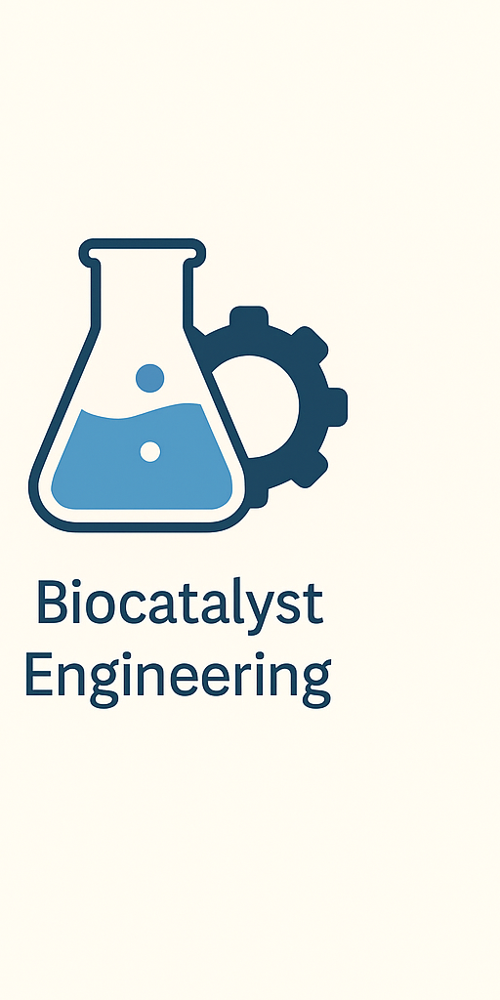

Our Research
At CompBioCat we explore enzymes and catalysis through advanced computational tools. We are part of the Institute of Computational Chemistry and Catalysis (IQCC), whose research lines include computational chemistry tools, sustainable catalysis, and predictive chemistry in the confined space. Our contributions span these areas by integrating quantum chemistry, multiscale modelling, machine learning and bioinformatics to understand and design enzymes.
Computational Chemistry Tools
We develop and apply state-of-the-art quantum chemistry and multiscale simulation methods to study reaction mechanisms and enzyme catalysis. These tools bridge the gap between theory and experiment and provide atomic-level insights for enzyme design.
Sustainable Catalysis
Our group applies computational modelling to support the design of sustainable catalytic processes, including biocatalysts and transition-metal catalysts, aiming for greener and more efficient synthesis.
Predictive Chemistry in the Confined Space
We investigate how confinement within enzymes and materials influences reactivity and selectivity. Using simulations and data-driven methods, we predict and engineer chemical transformations in confined environments.
